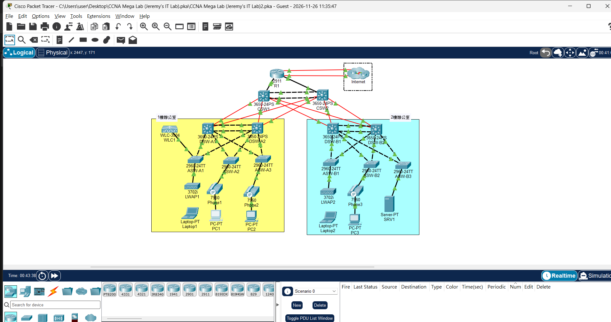

專案介紹
使用 Cisco Packet Tracer 模擬中型企業三層式網路，涵蓋 Core、Distribution 與 Access 層，以及兩個樓層的辦公室、終端設備及無線網路。以下為個人 Home Lab 設定流程及實作截圖，非正式企業上線案例。
VLANVTPEtherChannelHSRPv2Rapid PVST+OSPFDHCPNAT/PATACLDAIIPv6WLC企業網路拓樸

點擊圖片放大，或開啟原始拓樸紀錄。
查看拓樸 PDF九階段實作紀錄
點選各階段，直接閱讀 PDF 設定指令及原始截圖。
Part 01｜基礎設備初始化主機名稱、本機帳號、特權模式及 Console 設定；記錄模擬器指令支援差異。
查看 PDF 實作紀錄 →Part 02｜VLAN、VTP 與 L2 EtherChannelPAgP、LACP、802.1Q Trunk、VTPv2、Access 埠及 VLAN 分配。
查看 PDF 實作紀錄 →Part 03｜IP 定址、L3 EtherChannel 與 HSRPv2核心及匯聚交換器路由介面、鏈路聚合、SVI 與備援閘道設定。
查看 PDF 實作紀錄 →Part 04｜Rapid PVST+各 VLAN 根橋優先權、PortFast 與 BPDU Guard 設定。
查看 PDF 實作紀錄 →Part 05｜靜態路由與 OSPFOSPF Area 0、Router ID、Passive Interface 與雙線預設路由。
查看 PDF 實作紀錄 →Part 06｜企業網路服務與 NAT/PATDHCP Server、Relay、Option 43、SSHv2、NAT/PAT 與 LLDP。
查看 PDF 實作紀錄 →Part 07｜ACL 與第二層網路安全跨樓層流量控制、Port Security、DHCP Snooping 與 DAI。
查看 PDF 實作紀錄 →Part 08｜IPv6 雙協定堆疊IPv6 路由啟用、EUI-64 定址及主備預設路由。
查看 PDF 實作紀錄 →Part 09｜WLC 與 LWAP 無線網路Dynamic Interface、WLAN、WPA2/AES 與 AP 註冊驗證紀錄。
查看 PDF 實作紀錄 →實作疑難與限制
紀錄包含特權密碼演算法、802.1Q 封裝指令及 DHCP Option 43 在模擬器中的差異。Part 9 亦記載無線終端未能從外部 DHCP Pool 取得位址的情況；尚不宣稱完整端到端驗證成功。